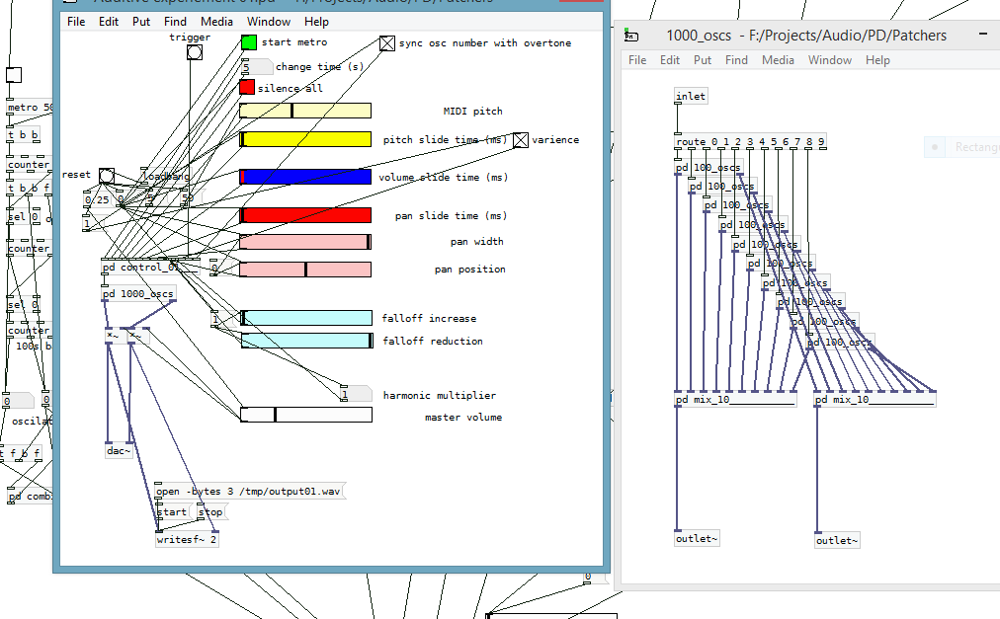

Pure Data is an open source visual programming language for music creation. I've been using it and it's cousin Max/MSP on and off for the past 12 years for a wide range of projects. It's the first programming language I learnt and led on to learning C, Java, Python, HTML, CSS and Javascript.
An on-going experiment of mine into additive synthesis. Milosin is an additive synthesiser created in Pure Data that uses 1000 sine wave oscillators to build up the individual harmonics of a sound. Below is a test track putting the synth through it's paces - don't expect music! The interface is a bunch of sliders and buttons controlled with mouse at the moment. The next step will be hooking up my digital piano and a control surface, I have some interesting thoughts on "stealing" harmonics from notes currently playing to build up any other notes played.
In the first part of the recording it sounds like any standard sawtooth synth. What sets it apart is later when the oscillators move from note to note independently, creating a cascading effect. I can also adjust the "harmonic multiplier". Essentially sawtooth waves are made from a fundamental frequency and then every integer (whole number) multiple of that frequency, decreasing in amplitude as the pitch increases. By setting the harmonic multiplier to a non-whole number we get a repeating patterns of inharmonics (hence the name of this site!) that create entirely new tones that are simply impossible to create using a subtractive synth. This effect can be heard clearly in the last 3rd of the recording where I first vastly expand the harmonics then gradually contract them until we are left with a closed growling sound before exploding them again at the end.
I am determined not to put up a back catalogue of old music on here, instead I want a fresh start. I am currently working on a solo piano piece, heavily inspired by the chromaticism of Philip Glass. I'll post an update as I finish each section but I don't want to put up the score half-finished!
The beautifully named Mandola Hangover are coming to the studio on the 5th April (2016) for another recording session. Below is one of the tracks I recorded and produced from their last visit. Looking forwards to another productive day's recording and I cant wait to try out my new Beyerdynamic DT880 headphones for the mix.